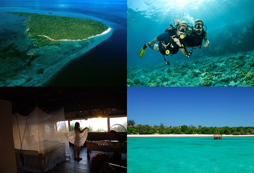
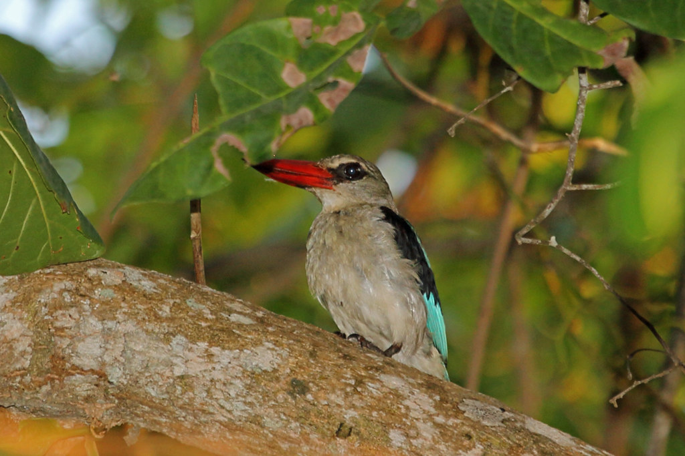
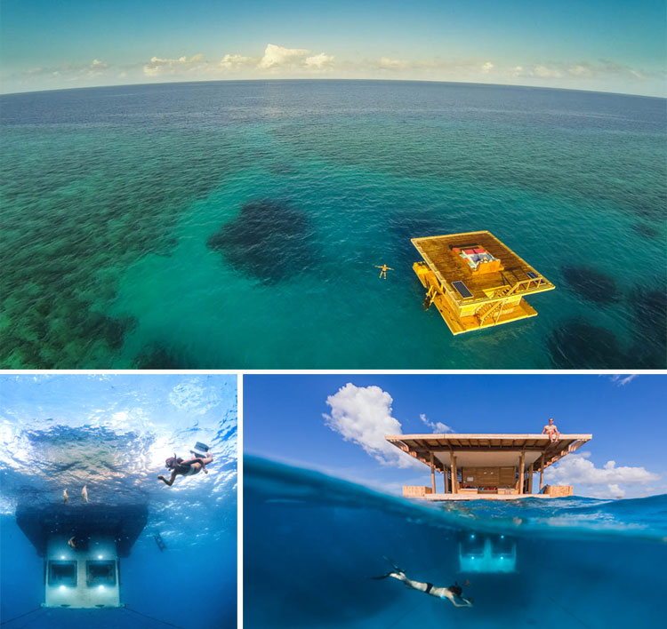

Parmi les autres îles de l’archipel de Zanzibar, l’île de Pemba est un véritable poumon végétal. Dépendante de la Tanzanie et située au nord de Zanzibar, Pemba est recouverte de collines et de plantations. L’île de Pemba est d’ailleurs surnommée « l’île verte » par les habitants de l’archipel. Sa nature verdoyante lui confère un caractère à la fois sauvage et immaculé… Rappelant le Zanzibar d’il y a 30 ans, Pemba est un véritable plongeon au cœur de l’authenticité.
L’île de Pemba, accessible par bateau ou via un vol direct depuis Zanzibar, regorge d’activités pour les voyageurs en quête de vie sauvage souhaitant découvrir l’Afrique authentique !
Sur place, le prix des activités reste raisonnable, une bonne raison d’en profiter ! Entre plongée dans quelques-uns des plus beaux spots de l’archipel de Zanzibar, randonnée au cœur de la forêt tropicale ou visite de ruines, découvrez les activités à ne pas manquer lors de votre voyage sur l’île de Pemba.

Île de Misali
Entouré d'eaux cristallines et de superbes récifs coralliens, Misali offre certaines des meilleures plongées d'Afrique de l'Est, tandis que la plongée avec tuba est spectaculaire et facilement accessible depuis la plage. Autour de l'île, les tortues nicheuses privilégient les plages du côté ouest, tandis que sur la côte nord-est se trouve la plage de Baobab , avec du sable fin et un petit centre de gardes forestiers (bien que les informations ici soient limitées).
L'île fait partie de la zone de conservation du canal de Pemba , qui couvre toute la côte ouest de Pemba. Tous les plongeurs, plongeurs en apnée et amateurs de plage doivent payer les frais d'admission. Il n'y a pas de colonies permanentes, bien que l'île soit utilisée activement par les pêcheurs locaux, et le camping n'est pas autorisé pour les touristes. À l'intérieur des plages se trouvent des grottes, censées être habitées par les esprits des ancêtres.

Réserve forestière de Ngezi
Dans l'extrême nord-est de Pemba, Ngezi dense et merveilleusement luxuriante est l'une des dernières zones de forêt indigène qui couvrait autrefois une grande partie de l'île, et aussi proche de la forêt tropicale que vous obtiendrez n'importe où sur Zanzibar. Protégée par une réserve de 1476 hectares, la forêt est une véritable double canopée, agrémentée de vignes offrant des balançoires aux singes vervets rauques. La porte d'entrée et le centre d'accueil se trouvent à 5 km à l'ouest de Konde, sur le chemin de terre principal menant à la péninsule de Kigomasha.
Depuis le centre d'accueil, deux sentiers de la nature traversent la forêt et des promenades hors-piste sont autorisées. Toutes les visites doivent être effectuées avec un guide naturaliste, dont certains parlent anglais. La plupart des visiteurs suivent le sentier Joshi (16000 Tsh par personne), qui prend environ une heure et est bon pour repérer les oiseaux, les singes colobes rouges et les renards volants Pemba (en particulier tôt le matin et en fin d'après-midi). Les ruines de la scierie qui se tenaient ici jusqu'aux années 1960 sont encore visibles.

Le Manta Resort
le Manta Resort, qui vient d'ajouter une chambre à son offre, et pas n'importe laquelle.. Il s'agit d'une sublime chambre d'hôtel sous-marine pour dormir au beau milieu des poissons... Un rêve !
C'est la société suédoise Genberg Underwater Hotels qui a imaginé et conçu cette merveille de structure sous-marine de trois étages, située à environ 250 mètres de la côte de l'île de Pemba. Trois étages parfaitement pensés, avec tout d'abord un toit-terrasse idéal pour se prélasser au soleil en sirotant un bon cocktail, sans modération !
Ensuite, au niveau de la mer, un coin salon et salle de bains, et enfin, sous le niveau de la mer, la chambre, superbe, équipée de larges fenêtres pour être plongé au milieu des poissons. Un spectacle époustouflant, notamment la nuit, les fenêtres étant équipées de projecteurs car la lumière attire la faune sous-marine.